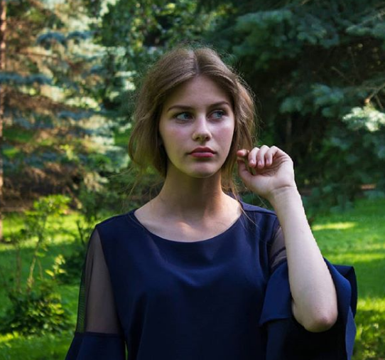

Моє життя
Мене звати Огороднича Софія. Я навчаюсь в СЗШ №67 міста Львова в 10 - А класі. В майбутньому мрію стати дизайнеркою або швачкою і прикладаю всіх зусиль, щоб цього досягти. У мене є молодший брат Григорій, якому дуже подобається вивчати англійську мову. Він навчається в 3 класі тієї ж школи. Також, серед моїх захоплень є скутери і автомеханіка, а також візаж та косметологія. У мене є багато друзів. З ними ми часто бачимось у КМС "Супутник".
Мій інстаґрам
